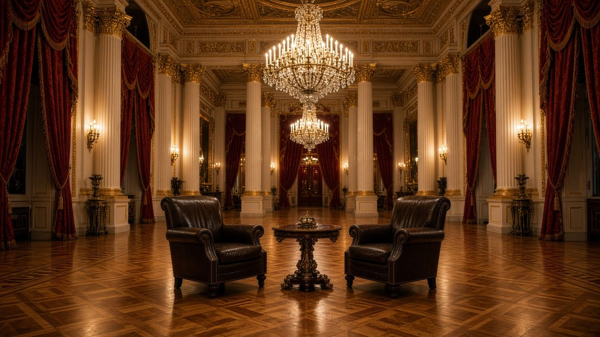
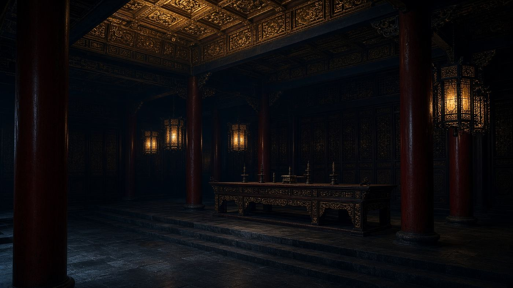

Главная · Блок II · 2022–2024 · Досье 05


Пустой золотой зал. Два кресла — постановка большого интервью.
Досье 05 / 10 · Большое видеоинтервью
Масштабное прямое обращение президента России к многомиллионной международной аудитории. Выступление включает подробный исторический экскурс об истоках восточнославянских государств, детальный анализ причин начала СВО, раскрытие нюансов стамбульского переговорного процесса и чёткое изложение условий Москвы для долгосрочного урегулирования конфликта.
Интервью Такера Карлсона — редкий случай, когда российский президент говорит два часа не через пул кремлёвских журналистов, а в западный камерный формат, сразу попадая к многомиллионной англоязычной аудитории. Запись — начало февраля 2024-го, Кремль. Карлсон несколько раз пытается свернуть исторический пролог к «тому, что случилось два года назад»; Путин настаивает: без истории нельзя понять 2022-й.
Сюжет строится как непрерывность восточнославянской государственности: IX век, Рюрик, Киевская Русь, крещение, затем разветвление земель, Речь Посполитая, Переяслав, империя, революция. Украинская ССР в этом рассказе — продукт ленинской национальной политики и сталинских прирезок (в том числе за счёт Румынии и Венгрии после Второй мировой). Отсюда формула «искусственного государства, сформированного волей Сталина» — спорная для академической украинистики, но центральная для кремлёвской аргументации о «красных линиях» на постсоветском пространстве.
Повторяется мюнхенский мотив 2007 года, уже с бытовыми подробностями. «Ни на дюйм к востоку» не зафиксировали на бумаге — «ну так мы и расширимся». Пять волн. «Мы всё это терпели», уговаривали: «мы такие же буржуа, рыночная экономика, нет власти компартии — давайте договариваться».
Отдельный эпизод — разговор с уходящим Биллом Клинтоном в соседнем кремлёвском кабинете: «Билл, если Россия попросится в НАТО, это возможно?» — «Интересно, думаю, да». Через часы ответ меняется на «нет». Путин: если бы сказали «да», началось бы сближение; «нет — значит нет». Совместная ПРО США–Россия–Европа, которую он предлагал, тоже не состоялась. Бомбардировки Белграда 1999 года названы моментом, когда США «выпустили джинна из бутылки».
Войну, говорит Путин, начала не Россия в 2022-м, а Украина в 2014-м «подготовкой военной акции»; цель Москвы — «остановить эту войну». Цели СВО к февралю 2024-го «не достигнуты» полностью; среди них — запрет неонацистских движений («денацификация»). НАТО у границ, включая потенциальный ядерный компонент, описывается как физическая угроза, а не каприз.
По Стамбулу: договор был близок, затем внешние игроки (в логике предыдущего пункта архива — Джонсон) склонили Киев продолжать. «Мы никогда не отказывались от переговоров». Текущему украинскому руководству предлагается «остановиться и сесть за стол»; ключ — в Вашингтоне, потому что Киев назван американским «спутником».
«Если вы действительно хотите прекратить боевые действия — перестаньте поставлять оружие. Это закончится в течение нескольких недель». Запад не добьётся «стратегического поражения» России. Планы нападения на Польшу и других членов НАТО отвергнуты как пропаганда. Обмен удерживаемого журналиста WSJ Эвана Гершковича намечен намёком, без сделки в кадре.
В архиве интервью стоит как сводная российская версия всего первого и второго блоков: история, Мюнхен, НАТО, 2014, Минск, Стамбул, условия мира — в одном тексте, адресованном уже не европейским канцлерам, а американскому зрителю.
Обещали: ни на дюйм к востоку. […] Пять волн расширения. Мы всё это терпели. Мы уговаривали: пожалуйста, не надо. Мы такие же буржуа, как вы.
В. В. Путин, интервью Т. Карлсону, февраль 2024
Если вы действительно хотите прекратить боевые действия, нужно перестать поставлять оружие. Это закончится в течение нескольких недель.
Там же
Первоисточник не встроен: это архив конспектов. Смотрите оригинал.
Открыть YouTube| ← 04. Интервью Давида Арахамии телеканалу «1+1»… | Все материалы | 06. Интервью Джеффри Сакса Такеру Карлсону… → |
Красные линии — статический HTML-архив. Без скриптов, без серверной части, без внешних шрифтов. Открывается с диска, на GitHub Pages и на uCoz. Кодировка UTF-8. Видео на сайт не загружались — только ссылки на первоисточники.
Материалы собраны как конспекты публичных выступлений, интервью и публикаций СМИ. Цитаты даны по общедоступным расшифровкам; полнота — у первоисточника.
Оглавление · СМИ · Скачать ZIP · Как выложить